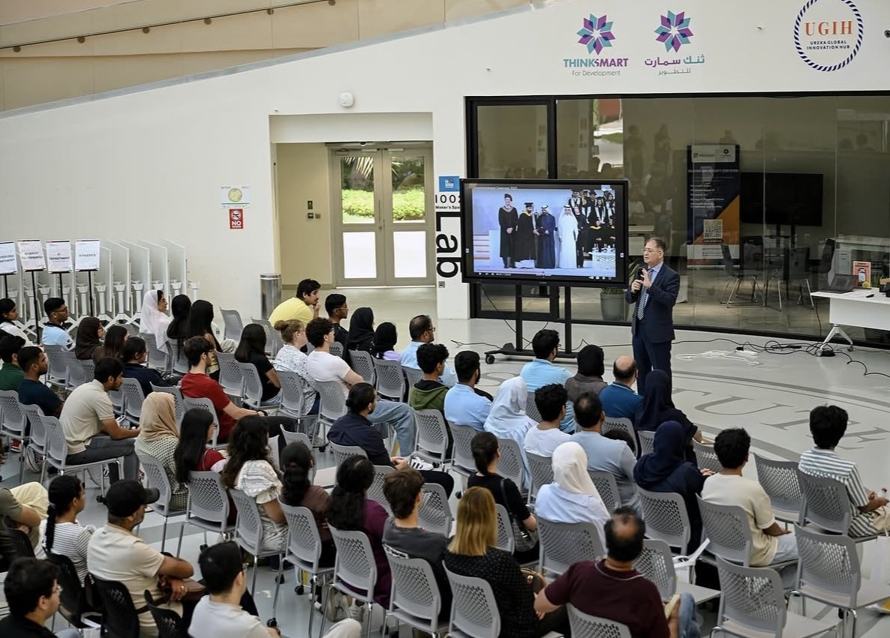

Student Survival Guide
A comprehensive guide to thriving in your first year at RIT
Hello and welcome to RIT. The RIT Student Survival Guide is a student-created resource designed to help incoming and current students navigate university life at the Rochester Institute of Technology (RIT). This guide covers five foundational pillars of a successful student experience: building meaningful social connections, managing time effectively, navigating the course enrollment process for both in-person and online classes, and seeking appropriate academic support.
Whether you are arriving from across the country or from abroad, adjusting to university life can be both exciting and overwhelming. This guide distills key strategies, techniques, and advice to help you adapt, grow, and thrive at RIT.
1. Making Friends
▼Building a social life is an important aspect of a student's university experience. Making friends provides a support system and promotes well-being. Developing connections with peers helps students adapt to the new university environment.

1.1 Orientation
As a new student in a foreign university, it is expected that you don't know many people — or anyone at all. But even during orientation day at RIT, you are bound to meet new people and socialize. During orientation, students participate in course-specific tours, providing opportunities to meet peers with similar academic interests, which can facilitate the formation of initial friendships.
The orientation also provides students with information on courses and extracurricular activities available throughout the campus.
1.2 Working in Groups
One of the many advantages of being a student at RIT is that students take value in participation. Working in groups familiarizes students with each other — allowing them to collaborate, evaluate each other's strengths, contributions, and personalities. This opens opportunities for both introverted and extroverted individuals to get to know one another, fostering teamwork and engagement.
1.3 Knowing Who to Be Friends With
Once students have interacted and become familiar with each other on campus, it is important to personally assess the group of people you want to be with. There is a saying that goes "choose your friends wisely" — and that is true.
2. Time Management
▼As a first-year student, university life offers a new environment to develop both academically and personally. This transitional period encourages growth, adaptation, and the cultivation of maturity. At RIT, you can join extracurriculars such as sports, clubs, or communities — all of which require intentional planning to balance alongside your coursework.
2.1 Scheduling
It is essential that students know how to manage their time properly. Effective time management often involves maintaining a structured class schedule alongside a record of required assignments for each course.
- Keep track of important extracurricular event dates.
- Create a personal calendar for deadlines, exams, and events.
- Balance academic work with extracurricular commitments proactively.
- Use Tiger Centre to view your full class schedule in a clean calendar format. You can download it directly to your device and import it into Google Calendar — setting automatic notifications 30 minutes before each class so you're always on time and never caught off guard.

2.2 The Eisenhower Matrix
The Eisenhower Matrix is a method of prioritization students can use during their academic life. It works by labeling key tasks across two axes — urgency and importance — to help decide what to tackle first.
Exams tomorrow, overdue assignments, urgent emails from faculty.
Long-term projects, studying, building skills, exercise.
Interruptions, some emails, club logistics that others can handle.
Mindless scrolling, distractions that add no value to your goals.
This method gives students space to think and choose which task requires the most attention and focus, reducing overwhelm and improving clarity.
2.3 The Pomodoro Technique
The Pomodoro Technique is a time management method that divides work into intervals — typically 25 minutes of focused work followed by a 5-minute break. After four intervals, take a longer 10–15 minute break.
2.4 As an Athlete
If you are an aspiring athlete at RIT, balancing academics and athletics requires extra planning and discipline. Here are strategies that work:
- Approach upperclassmen athletes for insights on how they balanced academic and athletic life in their first year.
- Keep track of your training days to avoid conflicts with classwork deadlines.
- Complete assignments in the library before training sessions — most athletes at RIT do this to get a full rest afterward.
- Build a habit of planning training and match days ahead so important work is never rushed.
- Use rest days strategically — pick a day to both rest your body and tackle assignments.

3. Enrolling in Classes
▼At the beginning of each semester, undergraduate students are responsible for enrolling in courses that align with their academic program. Each academic program includes core courses required for your major, along with electives such as intensive writing, general education, and perspectives (ethical, global, and philosophical) that students have the freedom to choose from.
3.1 Academic Advising
It might sound intimidating, but Academic advising is a simple process with people there to help you every step of the way. Before enrolling in classes, there is a scheduled meeting with your academic advisor to help you choose the right courses and provide insights on how each course operates.

3.2 Schedule Smarter with Syllify ⏰
Enrolling in classes and building your perfect schedule just got way easier and a whole lot less stressful! Syllify is a student-built tool made specifically for RIT courses. It connects directly to the course Excel sheet, so all you have to do is add the classes you want, tell it whether you want Friday classes or not, and boom — it generates clean, conflict-free schedules for you in minutes. No more staring at spreadsheets for hours, manually checking time slots, or crying over overlapping classes. Syllify does all the heavy lifting so you don't have to.
3.3 How to Enroll — Step by Step
After meeting with your faculty advisor, you can independently enroll in classes through the RIT Student Information System (SIS). Follow these steps:
- Search "RIT SIS" or "RIT Student Information System" in your browser.

- Log in with your RIT credentials (username and password).
- Click Enroll & Search.

- On the left-hand side, select Class Search and Enroll.

- Search specific class codes for courses you are interested in and open it to see the class timings.

- When viewing class options, make sure to select the correct Campus Location — Rochester, Dubai, or Croatia. Choose the one that matches your campus.

- Once you have selected your preferred time slot, press the Enroll button. If you have no holds on your account, you will be successfully enrolled in the course.
3.4 Enrollment Tips
- Some seats are reserved. Certain courses have seats held for specific majors — if you cannot enroll, it may not be open to your program yet. Check back later or speak to your advisor.
- Avoid timing conflicts. Use a pen and paper to map out your preferred schedule before enrolling — sketch out your week and find a combination of timings that works best for you.
- Always have a backup course. If you get waitlisted, a backup ensures you still meet your credit requirements for the semester. Never rely on a single option.
- Enroll as early as possible. Do not wait — popular courses fill up fast. The moment your enrollment window opens, log in and secure your spot before seats run out.
4. Online Classes
▼RIT offers students the flexibility to take courses both in-person and online. For students at the RIT Dubai campus, online classes provide access to courses taught at the main campus in New York or other RIT locations — expanding your academic options well beyond what is physically available on campus.
4.1 What Are Online Classes
Online classes are delivered through digital platforms instead of traditional, in-person classrooms. They can be either synchronous (live video at required times) or asynchronous (self-paced with recorded sessions and flexible deadlines). All course materials, assignments, discussions, and evaluations are conducted through MyCourses, RIT's online learning management system.
Live video sessions at scheduled times. You attend virtually in real time, just like an in-person class.
Self-paced with recorded lectures and flexible deadlines. Complete work on your own schedule.
4.2 How to Enroll in Online Classes
Enrolling in online classes follows a similar process to regular course enrollment but requires additional filtering steps to find courses offered in online formats. Follow these steps carefully:
- Navigate to the RIT Student Information System (SIS) by searching "RIT SIS" in your browser and logging in with your credentials.
- Click on Student Information System under the "Students" table.
- Select Enroll & Search from the menu.
- On the left-hand side, click Class Search and Enroll.
- Click on Additional Ways to Search to access advanced filtering options.
- A detailed search form will appear where you can input specific course criteria, including subject, course number, and term.
- After entering your search criteria, a filtering panel will appear on the left side of the screen to refine your search further.
- Scroll down to Instruction Mode in the filtering panel and select Online Synchronous (live online sessions) or Asynchronous (self-paced online courses) depending on your preference.
- Once you've found the online courses you want, add them to your shopping cart and proceed with enrollment.


4.3 Why Take Online Classes
There are several compelling reasons to consider online classes as part of your academic plan at RIT Dubai:
- Access to Specific Classes — Enroll in courses not available at RIT Dubai, including specialty classes that can only be taken at the main campus.
- Scheduling Flexibility — Asynchronous classes let you complete assignments on your own time, making it much easier to work around internships and other commitments.
- Fulfilling Requirements Efficiently — Complete general education, perspective, or elective requirements without scheduling conflicts.
- Learn at Your Own Pace — Review specific materials or advance quickly through concepts with self-paced online courses.

MyCourses is RIT's learning management system used for all online course materials and submissions.
5. Academic Support
▼No student should struggle alone. RIT Dubai offers a range of academic support resources — from peer tutoring to direct faculty access — designed to help you stay on track and perform at your best throughout the semester.
5.1 When to Seek Help
Recognizing when you need academic support is just as important as knowing where to find it. Many students ask for help late into the semester, which makes catching up significantly harder.
You don't understand key concepts after reviewing on your own · Grades are lower than expected despite studying · Consistently struggling with homework · Failed an exam and don't know how to improve · Falling behind and can't catch up alone.
Questioning whether you're in the right major · Unsure about your career direction · Considering dropping a course but don't know if it's the right decision.
5.2 How to Access Tutoring Services
RIT Dubai's Academic Success Center offers tutoring services to help students succeed in their courses — whether you need one-on-one support or prefer group study sessions. Follow these steps to access academic support:
- Visit the Academic Success Center website at rit.edu/dubai/academic-success-center
- Click on Tutoring Services from the menu.
- You will be presented with two options:
- View Tutoring Schedule — Weekly drop-in sessions open to all students, no appointment needed.
- Book a Session with a Tutor — Schedule personalized one-on-one tutoring.
- If you select Book a Session with a Tutor, you will be directed to the appointment booking page.
- Choose the subject you need support with, then select a time slot that works with your schedule.
- Fill out your personal information (name, email, student ID) and click Book Appointment to confirm your session.


5.3 Faculty Office Hours
Office hours are scheduled times when professors are available to meet with students outside of class. Every professor at RIT holds regular office hours, listed in the course syllabus uploaded on MyCourses.
Ask questions about lecture material · Get feedback on assignments before submission · Discuss exam prep strategies · Seek advice on improving your performance · Clarify grading criteria or assignment expectations.
Come prepared with specific questions · Don't wait until the last minute — go early in the semester · Be respectful of time if other students are waiting · Book a separate appointment for longer discussions.
No. Professors appreciate students who take initiative to seek clarification. Attending office hours shows you're engaged and committed to learning. It's far better to ask questions than to struggle in silence.
This page was created with the team effort of Ritesh, Mark, Navya, Liba & Vritti.
RIT Dubai Student Project from group 3 in COMM142.602